Uitvoering Hemelwaterafvoer
Laatst bijgewerkt 13-Augustusi 2017, SM
Onderdeel van: Hemelwater_Afvoer.html
Regenpijp achter het huis
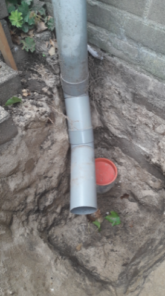 | Hier is de eerste regenpijp afgekoppeld. Gelukkig waren de onderste en bovenste delen niet gelijmd (zoals het hoort voor regenpijpen), waardoor de regenpijp als geheel te draaien was en de koppelstukken deels te herbruiken waren. De rioolpijp met een doorsnede van 110 mm is hier al afgedopt. Normaal gebruik je hiervoor een harde PVC deksel, maar deze had ik nog liggen en met een steen erop is deze net zo goed bruikbaar. |
| En zo gaat de regenpijp gekoppeld worden aan de nieuwe rioolbuis met een doorsnede van 110 mm. Deze regenpijp is hier 80 mm in doorsnede, mogelijk was hier een afvoer van 75 mm doorsnede ook voldoende geweest. |
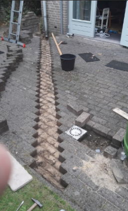 | 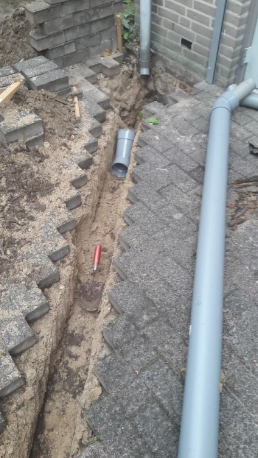 Het traject van deze afvoer naar de infiltratiekratten (die onder het grasveld gaan komen). Het uithalen (en weer terugzetten) van een dubbele rij stenen gaat relatief eenvoudig. |
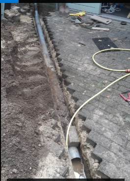 | |
Regenpijp bij de keuken
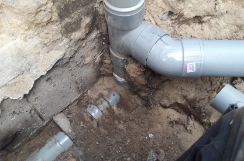 | Links losgekoppeld van het riool dat naar de straat loopt. Links zit even verderop de aansluiting van de keuken die nog wel gewoon naar het straatriool loopt. Aan de rechterkant loopt de rioolbuis door naar een tweede regenpijp en het afvoer van het achterterras. Deze rioolbuis rechts gaat dus als zandvang dienen voor regenpijpen en afvoerputjes. | |
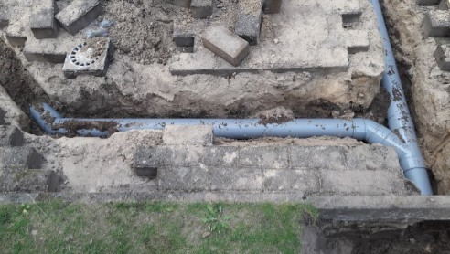 | Hier komen de twee afgekoppelde regenpijpen samen. | |
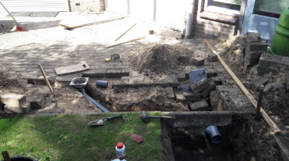 | En hier is het afvoerputje gewijzigd en ook op deze pijpen aangekoppeld. | |
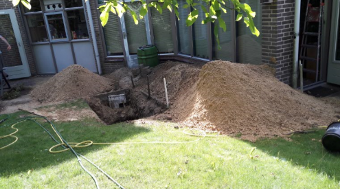 | Twee kuub, is toch wel veel zand. Zodra je dieper dan 70 cm zit, heb je geel zand, perfect om naast de kratten terug te storten. | |
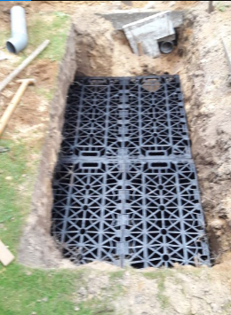 | Boven in beeld de 110mm buis waarop alle afvoer van de achterkant van het huis is aangesloten. Om de pasvorm van het gat te bekijken zijn hier alle 8 kratten gestapeld, 2*2*2 stuks. Het wordt hier ook duidelijk waarom geen verbindingspennen zijn gebruikt. Het geggraven gat is te klein en met name voor en links is het gat dus breder gemaakt onder het maaiveld. Het oppervlakte bedraagt 1*2=2 m2 en de hoogte bedraagt 80 cm. Hiermee wordt een volume gecreeerd van zo'n 1.6 kuub. Dit is bedoeld om ongeveer 100 m2 dak + terras op te vangen. Voor later metingen is het dus van belang te weten dat het oppervlakte 50 keer zo klein is. | |
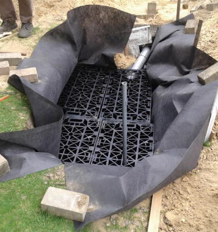 | Het inpakken in geo-textiel, waarbij overal minstens 50 cm overlap is gehouden. Bovenin is te zien hoe de 110 mm rioolpijp in het 160 mm gat van de krat komt. Als we daarvoor een officieel verloopstuk (30 Euro) hadden gebruikt was de passing veel en veel moeilijker verlopen. Op de voorgrond is de 32mm PVC buis voor het plaatsen van de nivo-meter zichtbaar. | |
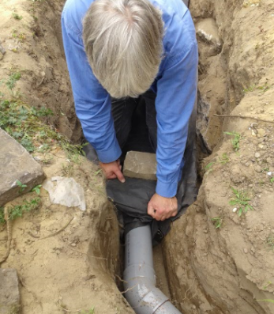 | 
Het afdichten van de buizen, even secuur werken en dan goed aanstampen. | |
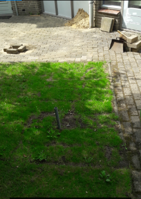 | En nu zie je er bijna niets meer van. | |
Regenpijpen aan de voorkant van het huis
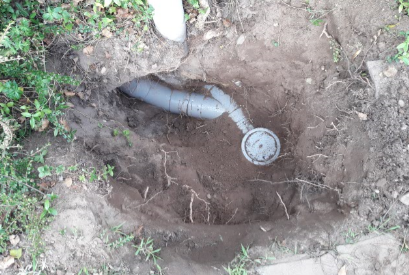 | De aansluiting van de regenpijp, die eerst naar links loopt en vervolgens terugkomt in de bezinkput. Nooit geweten dat daar een bezinkput zat. |

| De afgekoppelde regenpijp aan de voorkant van het huis. Van links komt de tweede regenpijp, die dus veel dieper ligt en dus tevens fungeert als zandvang. |
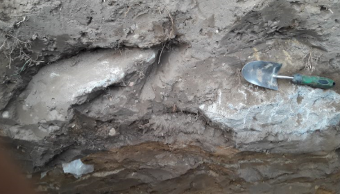 | Een onaangename verrassing die bijna 2 uur heeft gekost. Dat heeft de aannemer nooit verteld. |
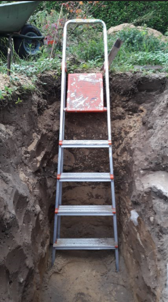 | Toch wel een aardig diep gat. We hebben 80 cm hoogte van de krat, die willen we 60 onder het maaiveld hebben, met een beetje extra ruimte moet je dan al een kuil van 150 cm graven. |
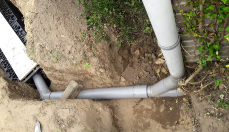 | Hoewel de kratten stevig genoeg zijn om te lopen, hebben we er toch maar een plank opgelegd, voelt fijner aan. |
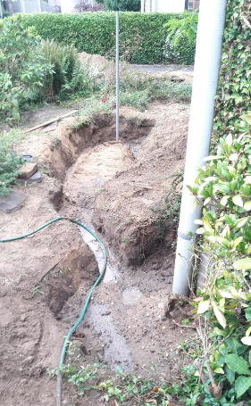 | |
En uiteindelijk ook het zand afgevoerd.
We hadden een 3 kuub container besteld, maar we kregen een 6 kuub, vandaar.
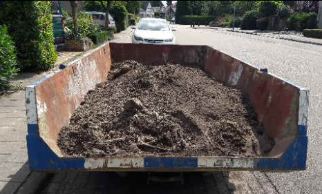
Created with Microsoft Office OneNote 2007
One place for all your notes and information